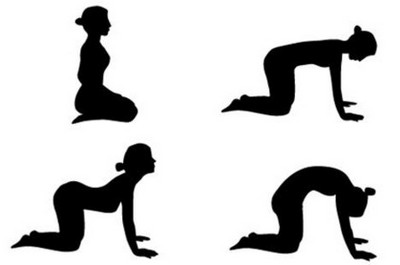

Поза кошки позволяет мягко размять весь позвоночник, улучшая его гибкость. Она
проста в выполнении, и подходит большинству практикующих йогу, особенно начинающим.
Марджариасана: техника выполнения

Сядьте в позу Ваджрасана. Расслабьтесь. Выдохните, вдохните, и перейдите в положение «на четвереньках», подняв ягодицы, и поставив на пол ладони, прямо под плечами; пальцы направлены вперед. И колени, и ладони находятся на одних линиях, на ширине плеч. В принципе, колени можно держать вместе, если вам так удобнее. При этом, и бедра, и прямые руки перпендикулярны полу (см. рисунок ниже). Это исходное положение.
На вдохе поднимите голову, и прогните спину. Легкие наполните по максимуму, живот расширьте. Задержите дыхание в этом положении на 3 секунды.
поза кошки в йоге - первое положениеНа выдохе опустите голову, и выгните спину в
сторону потолка. К концу выдоха сократите мышцы живота, подтяните ягодицы и копчик
в сторону живота. Голова оказывается между руками, лицо «смотрит» на бедра. Также
задержитесь дыхание на 3 секунды в этом положении, направляя внимание на изгиб спины,
и сокращение мышц живота.Это полный цикл позы кошки. Для обычной практики рекомендуется выполнять от 5 до 10 подобных циклов.
Помните о том, чтобы держать руки и бедра перпендикулярными полу; руки в локтях не сгибать.
Дыхание: совмещайте движение и дыхание, при этом старайтесь дышать и двигаться медленно, насколько это возможно, например, тратя 5 секунд на вдох и 5 секунд на выдох.
Польза позы кошки
-Эта асана улучшает гибкость позвоночника по всей длине, особенно в области шеи и плечевого пояса. Она мягко тонизирует женскую репродуктивную систему. Позу кошки можно безопасно практиковать во время беременности, вплоть до шестого месяца, правда, после третьего месяца нужно прекратить напряжение мышц живота.
Если женщина страдает от нарушений менструального цикла и от бели, выполнение позы может принести облегчение; эту асану можно выполнять и во время месячных, чтобы избавиться от возможных неприятных ощущений.
Марджариасана — простая, но в то же время, довольно эффективная поза для вашей спины. Кроме того, ввиду ее мягкого воздействия, ее можно практиковать перед сном. Однако не занимайтесь после еды; должно пройти хотя бы два — лучше три — часа после еды.